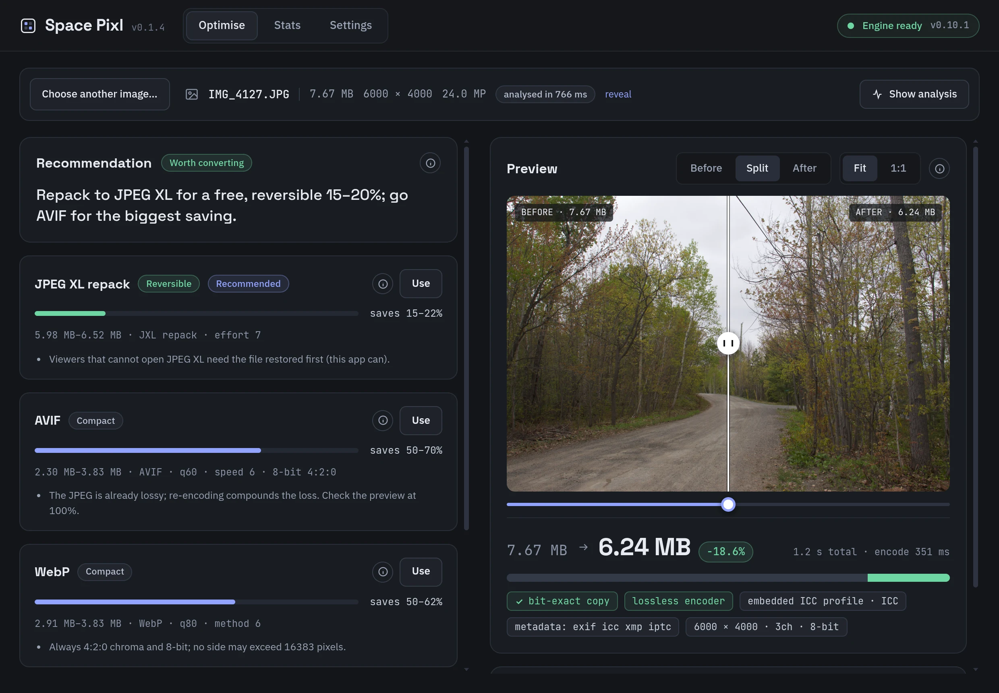

A storage optimiser for photo libraries
Reclaim your photo library.
Same photos, a fraction of the space.
Space Pixl looks at each photo, tells you what it can honestly save, previews the real encode before you commit, and writes the result beside the original. Nothing is overwritten. Nothing is guessed.
macOS 13+ (Apple Silicon and Intel) and Windows 10/11 x64. Builds are currently unsigned, so first launch takes one extra step. See install.

How it works
Five steps. The only one that changes a file is the last.
Every decision lives in the app and is shown to you. The engine underneath just does exactly what it is asked and reports back what happened.
Read the file
Format, pixels, bit depth, colour profile, metadata, and how it was encoded in the first place.
Rank the options
A verdict and a shortlist with expected savings, drawn from measured results, not a slider labelled "quality".
Every knob, if you want it
Encoder settings, resize, depth and channels, metadata carry-over, colour policy, RAW development, dither.
See the real encode
Each change runs the actual encoder to a temp file. The size you see is the file's size; the pixels are the file's pixels.
Beside the original
IMG_0042.jxl lands next to IMG_0042.jpg. The original is
never touched, never overwritten.
What you save
Measured on real files, not quoted from a datasheet.
One 8.04 MB JPEG from the engine's test fixtures, re-encoded every way it offers. Drag the slider to scale those ratios to your own library.
Bit-exact and reversible: the original JPEG can be restored byte for byte at any time.
Apple M2 Pro, release build. AVIF q60, WebP q80, JPEG XL distance 1 effort 7, HEIC q80. The HEIC and PNG bars go the wrong way on purpose: the app will tell you when a conversion is not worth it.
In the app
Every number on screen came out of the engine.
Meet the PIXL engine
An image engine that does exactly what you tell it, and tells you exactly what it did.
PIXL is the part of a photo app that touches pixels. It opens image files, changes them, and writes them back out. It is written in Rust, ships as compiled binaries for macOS and Windows, and Space Pixl is one of the apps built on it.
PIXL makes no decisions. You say the format, the size, the quality, the colour space, the look. It does that, exactly, and hands you a receipt. If what you asked for is impossible, it refuses and names the setting to change. It never quietly does something else instead.
Most image libraries guess: pick a quality for you, fall back to a different codec, drop your transparency, re-encode a photo you thought was being copied. PIXL has no guesses to go wrong. The one thing it is opinionated about is honesty: it will not write a file whose colour description disagrees with its pixels.
Every pixel format converts to every other one
With resizing (nearest, bilinear, Catmull-Rom, Lanczos3, or a super-resolution model you supply), explicit bit-depth and channel control, optional linear-light resampling, and metadata carried across container boundaries.
| Reads | Writes |
|---|---|
| JPEG · PNG · HEIF / HEIC / AVIF · JPEG XL · TIFF · WebP · RAW | JPEG · PNG · AVIF · JPEG XL · TIFF · WebP · DNG |
Two paths are bit-exact: the JPEG → JPEG XL repack (about 19% smaller, no pixel ever decoded, reversible) and a same-format copy when nothing needs to change. HEIC input is read; HEIC output is not offered in Space Pixl.
Colour, resolved in a stated order
Embedded ICC profile → CICP code points → the format's own default. Then one of four policies you name, never a guess:
| Policy | What it does |
|---|---|
| Preserve | keep the description, never touch a pixel |
| Assign | relabel the pixels with a colour space you assert, without converting them |
| ConvertTo | convert the pixels into a named colour space through Little CMS |
| ToneMap | bring an HDR source down to SDR with an operator and both peaks that you name |
Pixels are rounded once, and the report says so. Resampling can be done in linear light, which fixes the dark fringes and haloes that gamma-space resizing produces on hard edges.
RAW, developed or archived
A camera RAW can be developed in linear light (physically correct numbers, the right input for grading), developed straight to the sRGB curve, or read through the camera's own embedded preview when speed matters more than control.
| Path | Measured |
|---|---|
| Canon CR2 → DNG, lossless | 35.67 MB → 30.77 MB in 0.51 s, sensor mosaic preserved |
| CR2 → develop → JPEG q92 | 35.67 MB → 5.40 MB in 0.83 s |
| CR2 → embedded preview → JPEG q92 | 35.67 MB → 5.79 MB in 0.42 s |
For archives, RAW → DNG is the safe move: lossless, smaller, and readable by everything.
HDR is refused until you say how
HDR photos carry brightness a normal screen cannot show. Squashing it down is tone mapping, and there is no correct answer, only answers that suit different content. An HDR source bound for an SDR output is an error unless tone mapping is requested explicitly, with the operator and both peaks named.
error: unsupported: hdr → sdr — the source uses PQ (SMPTE ST 2084); a standard-dynamic-range output needs ColorPolicy::ToneMap, which names the operator and both peaks. Otherwise request an HDR-capable sink (JXL, AVIF, HEIC, PNG), or assign an SDR colour space with ColorPolicy::Assign if the pixels are not really HDR.
PQ and HLG files survive untouched into HDR-capable sinks. Errors name the field to change.
Every conversion returns a report
Which decoder and encoder ran, whether the path was bit-exact, how the colour was resolved, which metadata blocks were carried, the output's dimensions, depth and channels, and the time each stage took. Space Pixl shows these as the chips under the preview: ✓ bit-exact copy embedded ICC profile · ICC metadata: exif icc xmp iptc
The same honesty applies before the work: analyze() returns per-channel
histograms, clipping percentages and grey-world gains, so an "Auto" button is numbers
you can print, not a decision made for you.
What it is built on
| Job | Library |
|---|---|
| JPEG | libjpeg-turbo, SIMD, built from vendored source |
| PNG | the png crate, native depth and colour type preserved |
| HEIF / HEIC / AVIF | libheif with aom, 8/10/12-bit |
| JPEG XL | an in-house wrapper over libjxl |
| TIFF | the tiff crate in, rawler's writer out |
| WebP | libwebp |
| RAW + DNG | rawler (the DNGLab writer) |
| Colour management | Little CMS, vendored |
| Resampling | fast_image_resize, SIMD, 8- and 16-bit |
| Upscaling | ONNX Runtime, loaded dynamically, model supplied by the app |
One Rust interface with Swift, Kotlin and Node bindings. In Space Pixl the Node binding runs inside an Electron utility process.
What PIXL will never do for you
This list is the feature, not a disclaimer. Every item is a judgement call that belongs to the app that knows its users.
- Route by file extension, or re-sniff a file you already told it about
- Decide a quality, an effort level or a codec
- Decide whether a conversion is worth it
- Pick a tone-mapping operator or invent a mastering peak
- Press "Auto"
- Fall back to a second-best path when the first fails
- Clamp anything to what it guesses your device can handle
- Drop your alpha channel or halve your bit depth to make a request succeed
Coming next
Space Pixl is one way to use the engine. The next one is an editor.
A Lightroom alternative, built on the same honest engine.
Sliders, looks and presets. White balance and exposure in linear light where they belong, curves and HSL where the eye lives, film LUTs at any strength, RAW developed properly, HDR delivered on purpose. Every edit is a named operation in a named colour space, and presets are plain JSON you can read and share.
No date yet. Watch the space-pixl repository for the announcement.
Install
Download v0.1.5
Installers are attached to each GitHub release. The app checks for updates on launch and every four hours.
macOS
-
Open the
.dmgand drag Space Pixl to Applications. -
Clear the quarantine flag once (this is what the "damaged" dialog is about):
xattr -dr com.apple.quarantine "/Applications/Space Pixl.app"
- Open Space Pixl from Applications.
Windows
-
Run
space-pixl-0.1.5. It installs per user, no admin prompt. - If SmartScreen appears, click More info, then Run anyway.
- Space Pixl opens when the installer finishes and updates itself in the background from then on.
Latest release: v0.1.5 on GitHub.